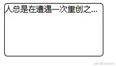
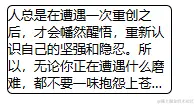
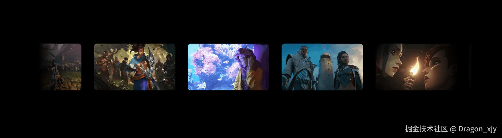
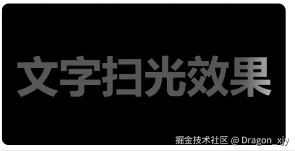

- 60 哪个 css 格式化工具是你的首选
- 59 CSS 选择器详解 12 个必知用法与最佳实践
- 58 动态视口单位之 dvh、svh、lvh
- 57 不规则造型按钮解决方案
- 56 不定宽文本溢出跑马灯效果完美解决方案
- 55 巧用 CSS 变量，实现动画函数复用
- 54 角向渐变的妙用
- 53 有趣的六芒星能力图动画
- 52 有意思的气泡 Loading 效果
- 51 CSS 原生支持的三角函数
- 50 有意思的网格下落加载效果
- 49 有意思的 Emoji 3D 表情切换效果
- 48 神奇的 3D 磨砂玻璃透视效果
- 47 抢先体验！超强大的 Anchor Positioning 锚点定位
- 46 CSS 也能实现碰撞检测
- 45 现代 CSS 解决方案 - 数学函数 Round
- 44 现代 CSS 解决方案 - 原生嵌套
- 43 神奇的背景，生化危机4日食 Loading 动画还原
- 42 当路径动画遇到滚动驱动
- 41 CSS 还原拉斯维加斯球数字动画
- 40 单标签下多色块随机文字随机颜色动画
- 39 CSS 也能实现 if 判断？实现动态高度下的不同样式展现
- 38 Flex 布局下居中溢出滚动截断问题
- 37 带圆角的虚线边框
- 36 现代 CSS 解决方案：文字颜色自动适配背景色
- 35 神奇的 3D 卡片反光闪烁动效
- 34 现代 CSS 解决方案：accent-color 强调色
- 33 巧用 has 和 drop-shadow 实现复杂布局效果
- 32 巧用 CSS + SVG 实现复杂线条光效动画
- 31 极具创意的鼠标交互动画
- 30 标准滚动条控制规范 scrollbar-color 和 scrollbar-width
- 29 类 ChatGpt 多行文本打字效果
- 28 神奇的卡片 Hover 效果与 Blur 的特性探究
- 27 渐变边框文字效果
- 26 巧妙使用多种方式实现单侧阴影
- 25 全尺寸的带圆角的渐变边框
- 24 开发中保证你用得到的 css 小技巧
- 23 您应该了解的 15 个有用的 CSS 属性
- 22 CSS 行元素的截断样式 box-decoration-break 属性
- 21 用 SASS 简化媒体查询
- 20 为什么你应该停止使用传统的 margin 和 padding 来设置 CSS 样式
- 19 sass 优化响应式布局代码
- 18 盘点 CSS 文本两端对齐的 N 种方式
- 17 如何修改滚动条的样式
- 16 CSS 模拟图片透明的棋盘背景
- 15 文本描边完美实现
- 14 你需要自定义 @property 而不是 CSS 变量的情况
- 13 从高度 0 过渡到自动高度
- 12 一些 css 语法解释
- 11 scss 日常用法
- 10 sass 指南
- 09 CSS 颜色设置透明度的新姿势
- 08 CSS 属性 appearance
- 07 CSS 动画性能优化
- 06 CSS 功能特性
- 05 CSS 中的 var() 函数
- 04 15 个你不知道的 CSS 属性
- 03 will-change
- 02 normalize.css 清除元素默认样式
- 01 纯 CSS 获取屏幕宽高
开发中保证你用得到的 css 小技巧
HaoTian · 2024-11-02 21:38:12
firlter 家族
filter 属性将模糊或颜色偏移等图形效果应用于元素。滤镜通常用于调整图像、背景和边框的渲染
图片置灰
filter: grayscale(100%);
滤镜阴影
filter: drop-shadow(5px 5px 5px rgba(0, 0, 0, 0.5));
大多数人都知道box-shadow是设置盒子阴影，但你知道 filter: drop-shadow与box-shadow的区别吗？ 举个例子：
不难看出区别显而易见，但值的注意的是 filter: drop-shadow只针对一张无背景的图片。
图片模糊化
/* 数值越高越模糊 */
filter: blur(3px);
图片亮度调整
filter: brightness(1);
brightness() CSS函数将线性乘数应用于输入图像，使其看起来更亮或更暗。
加上属相后的效果：

文本省略
单行文本
<style>
.box {
width: 150px;
height: 80px;
border: 1px black solid;
border-radius: 5px;
overflow: hidden;
/*超出部分隐藏*/
text-overflow: ellipsis;
/*超出部分显示省略号*/
white-space: nowrap;
/*规定段落中的文本不进行换行 */
}
</style>
<body>
<div class="box">
人总是在遭遇一次重创之后，才会幡然醒悟，重新认识自己的坚强和隐忍。所以，无论你正在遭遇什么磨难，都不要一味抱怨上苍不公平，甚至从此一蹶不振。人生没有过不去的坎，只有过不去的人。
</div>
</body>
多行文本
<style>
.box {
width: 150px;
height: 80px;
border: 1px black solid;
border-radius: 5px;
overflow: hidden;
display: -webkit-box; /*将对象作为弹性伸缩盒子模型显示*/
-webkit-box-orient: vertical; /*设置伸缩盒对象的子元素的排列方式*/
-webkit-line-clamp: 5; /*用来限制在一个块元素中显示的文本的行数*/
word-break: break-all; /*让浏览器实现在任意位置的换行 *break-all为允许在单词内换行*/
}
</style>
<body>
<div class="box">
人总是在遭遇一次重创之后，才会幡然醒悟，重新认识自己的坚强和隐忍。所以，无论你正在遭遇什么磨难，都不要一味抱怨上苍不公平，甚至从此一蹶不振。人生没有过不去的坎，只有过不去的人。
</div>
</body>
渐变
linear-gradient
linear-gradient() 创建一个由两种或多种颜色沿一条直线进行线性过渡的图像。
linear-gradient(to right, #ff9a62, var(--main--bg));
radial-gradient()
radial-gradient() 创建一个图像，该图像由从原点辐射的两种或多种颜色之间的渐进过渡组成，其形状可以是圆形或椭圆形。
background: radial-gradient(rgb(243 152 73) 23%, #000000 75%);
mask
mask 允许使用者通过遮罩或者裁切特定区域的图片的方式来隐藏一个元素的部分或者全部可见区域。
Case 1
如果你想做一个图片的轮播切换效果，就会出现上图所示，比较生硬。但是加上下面的mask效果，边缘有一层遮罩效果，体验就会好许多
mask: linear-gradient(90deg, transparent, black 10%, black 90%, transparent);
mask 设置transparent的部分，图片会变得透明
Case 2
两张图片的一个好看的展示效果！
<style>
.box {
position: relative;
}
img {
width: 600px;
position: absolute;
}
img:nth-child(1) {
mask: linear-gradient(124deg, #000 55%, transparent 45%);
}
img:nth-child(2) {
mask: linear-gradient(301deg, #000 48%, transparent 53%);
}
</style>
<body>
<div class="box">
<img src="./img/pic1.png" alt="" />
<img src="./img/pic2.png" alt="" />
</div>
</body>
两张图片重叠使用mask可达到分割渐变的效果。
其他
background-blend-mode
/* 以下三个css属性结合，可以达到背景与背景颜色重合的效果 */
background: url(../../assets/img/user_bg.png) no-repeat 50% 100%;
background-blend-mode: overlay;
background-color: rgba(255, 255, 255, 0.1);
overlay 模式将背景图像和背景颜色以混合模式的方式结合起来，增强对比度，同时保持图像的明亮度。这种模式通常用于增强图像的视觉效果或与背景颜色进行对比。
让文字发光
text-shadow: 0px 0px 5px rgba(255, 255, 255);
毛玻璃
backdrop-filter: blur(2px);
backdrop-filter 属性可以让你为一个元素后面区域添加图形效果（如模糊或颜色偏移）。因为它适用于元素背后的所有元素，为了看到效果，必须使元素或其背景至少部分透明。
<style>
.box {
width: 100vw;
height: 100vh;
background-color: gray;
display: flex;
align-items: center;
justify-content: center;
background: url("./img.png") no-repeat;
background-size: cover;
}
.text {
width: 200px;
height: 100px;
backdrop-filter: blur(2px);
border-radius: 20px;
background-color: rgba(0, 0, 0, 0.1);
box-shadow: 0px 0px 5px rgba(0, 0, 0, 0.9);
display: flex;
color: black;
align-items: center;
justify-content: center;
}
</style>
<body>
<div class="box">
<div class="text">css毛玻璃</div>
</div>
</body>
css 小案例
图片循环轮播
<template>
<div class="swiperContent">
<div class="picImg">
<img src="./img/pic1.jpg" alt="" />
<img src="./img/pic2.png" alt="" />
<img src="./img/pic3.png" alt="" />
<img src="./img/pic4.jpg" alt="" />
<img src="./img/pic5.jpg" alt="" />
<img src="./img/pic6.png" alt="" />
<img src="./img/pic7.jpg" alt="" />
<img src="./img/pic8.jpg" alt="" />
<img src="./img/pic1.jpg" alt="" />
<img src="./img/pic2.png" alt="" />
<img src="./img/pic3.png" alt="" />
<img src="./img/pic4.jpg" alt="" />
<img src="./img/pic5.jpg" alt="" />
<img src="./img/pic6.png" alt="" />
<img src="./img/pic7.jpg" alt="" />
<img src="./img/pic8.jpg" alt="" />
</div>
</div>
</template>
<style scoped lang="scss">
@keyframes swiper {
to {
transform: translateX(-50%);
}
}
.swiperContent {
width: 80%;
height: 100vh;
display: flex;
overflow: hidden;
margin: auto;
mask: linear-gradient(
90deg,
transparent,
black 10%,
black 90%,
transparent
);
.picImg {
margin: auto;
/* 撑满就不会出现动画效果的卡顿了 */
width: max-content;
display: flex;
align-items: center;
animation: swiper 10s linear infinite;
img {
width: 260px;
height: 150px;
border-radius: 10px;
margin-right: 40px;
}
&:hover {
animation-play-state: paused;
}
}
}
</style>
扫光
容器扫光
<template>
<div class="tips">热门商品</div>
</template>
<style scoped lang="scss">
@keyframes tip {
from {
transform: skewX(45deg) translateX(80px);
}
to {
transform: skewX(45deg) translateX(-10px);
}
}
.tips {
width: 45px;
margin-left: 10px;
background-color: red;
font-size: 10px;
padding: 5px 10px;
font-weight: bold;
border-radius: 2px;
color: #fff;
position: relative;
overflow: hidden;
margin: 100px 100px;
&::before {
content: "";
position: absolute;
top: 0px;
left: 0px;
width: 15px;
height: 100%;
background-color: rgb(255, 255, 255, 0.5);
animation: tip 1s linear infinite;
}
}
</style>
文字扫光
<template>
<div class="box">
<span class="tip">文字扫光效果</span>
</div>
</template>
<style scoped lang="scss">
@keyframes shine {
from {
background-position: 0% 0%;
}
to {
background-position: 150% 100%;
}
}
.box {
width: 200px;
height: 100px;
border-radius: 5px;
font-weight: bold;
background-color: black;
display: flex;
align-items: center;
justify-content: center;
.tip {
font-size: 30px;
background: #585757 linear-gradient(
to left,
transparent,
#fff,
transparent
) no-repeat 0 0;
background-size: 40% 100%;
background-clip: text;
-webkit-background-clip: text;
color: transparent;
animation: shine 1s infinite;
}
}
</style>